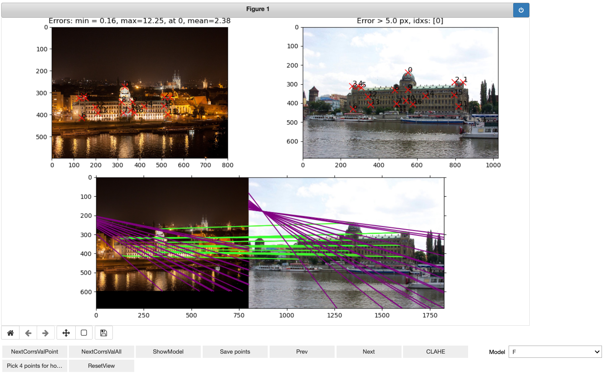
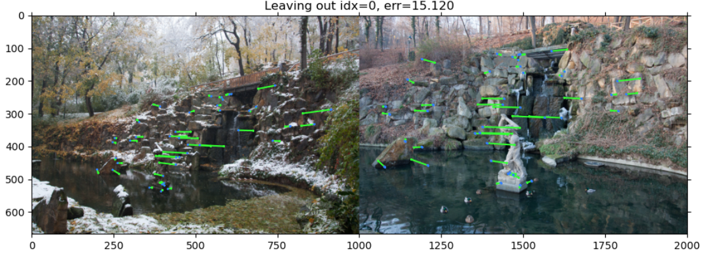
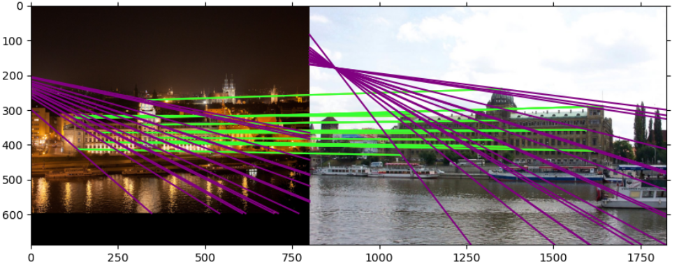
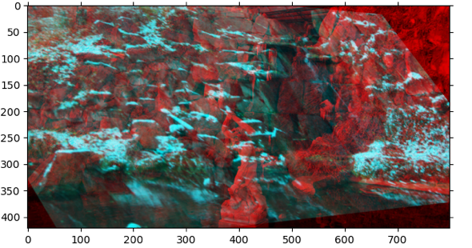
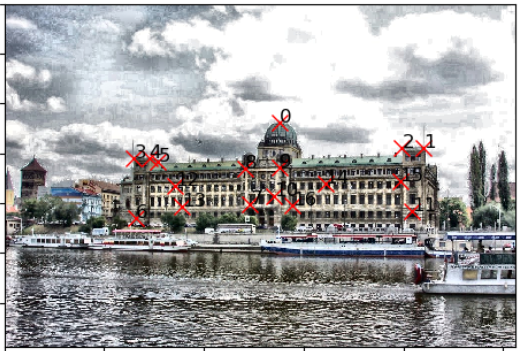
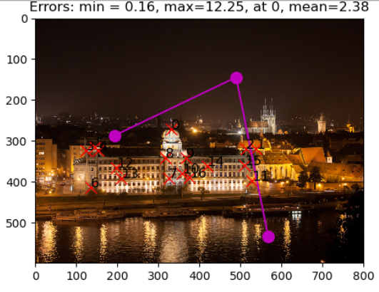

Simple, matplotlib based tool for hand-labeling the two-image correspondences
Install
pip install pixelstitch
Requires Python >= 3.9. Works with current matplotlib/numpy/notebook/JupyterLab/VS Code — use the %matplotlib widget magic (ipympl) before starting the annotator.
Classic notebook 6 setups (matplotlib < 3.5)
Old environments keep working: use %matplotlib notebook instead of %matplotlib widget. A known-good recipe:
/opt/homebrew/Caskroom/miniforge/base/envs/python39/lib/python3.9/site-packages/ipykernel/ipkernel.py:283: DeprecationWarning: `should_run_async` will not call `transform_cell` automatically in the future. Please pass the result to `transformed_cell` argument and any exception that happen during thetransform in `preprocessing_exc_tuple` in IPython 7.17 and above.
and should_run_async(code)
Now we are ready to initialize CorrespondenceAnnotator. Don’t forget to declare magic command %matplotlib widget. WITHOUT MAGIC IT WOULD NOT WORK
You also should explicitly specify, if you want to save (and possibly over-write previous better annotation) current correspondences automatically when clicking on prev and next buttons for going to the next pair.
from pixelstitch.core import*CA = CorrespondenceAnnotator(img_pairs_list, save_on_next=True)
/opt/homebrew/Caskroom/miniforge/base/envs/python39/lib/python3.9/site-packages/ipykernel/ipkernel.py:283: DeprecationWarning: `should_run_async` will not call `transform_cell` automatically in the future. Please pass the result to `transformed_cell` argument and any exception that happen during thetransform in `preprocessing_exc_tuple` in IPython 7.17 and above.
and should_run_async(code)
Now we can run the annotation.
Left-click on the image to add a point
right-click – to remove the point from both images.
Matplotlib shortcuts:
o for zoom
p for pan (move)
It is also recommended to set full page width for the jupyter
from IPython.display import display, HTMLdisplay(HTML("<style>.container { width:95% !important; }</style>"))CA.start(figsize=(12,7))

image.png
Controls
Selectors
Model. One can select between “F” – fundamental matrix and “H” – homography. The selection influences the reprojection error type, and the visualization of the models and reprojection errors, shown when clicked on NextCorrsValPoint, NextCorrsValAll and ShowModel buttons.
Buttons
NextCorrsValPoint. Shows the correspondence in the bottom axis. The image title shows correspondence index and the reprojection error. If Model is F, it will show induced epipolar line, if H – the position of the reprojected point from other image. The model is estimated with all other correspondences except current one.
NextCorrsValAll. Shows the correspondences in the bottom axis. Similar to NextCorrsValPoint button, but shows all points. The model is estimated with all correspondences except current one, which index is shown in the title.

ShowModel. Has different behavoir depending on the Model selected. For F – shows correspondences with their induced epipolar lines. Unlike NextCorrsValPoint and NextCorrsValPoint all correspondences are used for model estimation.

For H, the button shows overlay of image 1 reprojected into image2 with image2. The reprojected area is defined by the convex hull of the labelled correspondences. Next click flips the order, i.e. shows the image 2 reprojected into image 1.

Save points – saves (overwrites) the correspondences into the text file.
Prev – Loads and shows previous image pair to label. If the CorrespondenceAnnotator was initialized with save_on_next=True, the current pair correspondences are saved before the switch. Change is not cyclical, so the button does nothing on 1st image pair
Next – Loads and shows next image pair to label. If the CorrespondenceAnnotator was initialized with save_on_next=True, the current pair correspondences are saved before the switch.Change is not cyclical, so the button does nothing on last image pair.
CLAHE – Images are shown with enhanced contrast with CLAHE algorithm.

Pick 4 points for homography – Special mode. User picks 4 points in one image, which define new fronto-parallel view. This mode helps for labeling obscure views, see example below. The order of the points: top-left -> top-right -> bottom right -> bottom left. After the 4 point picked, the mode is switched off, so user needs to click the button again if she wants to rectify another image.
ResetView – Resets any recifications or zoom done to images.
Rectification picking mode example
3 points are selected

All points are selected and image1 is rectified to the rectangle, defined by the selected points